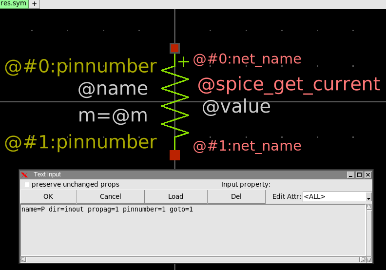
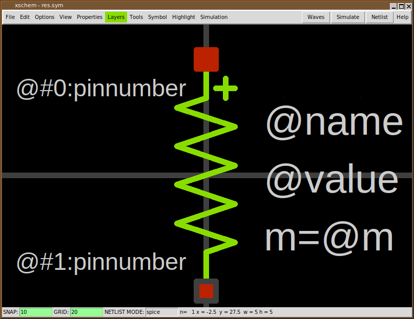
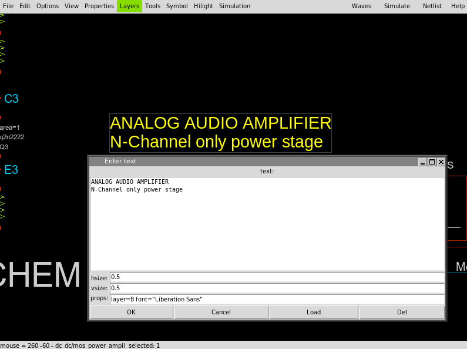
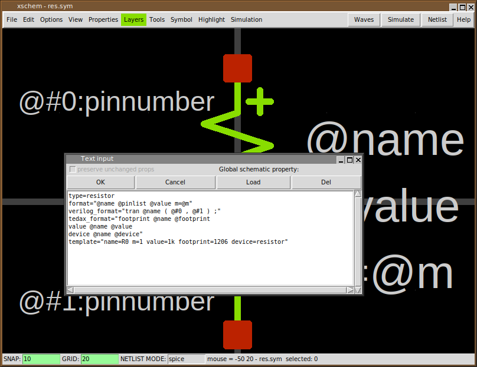
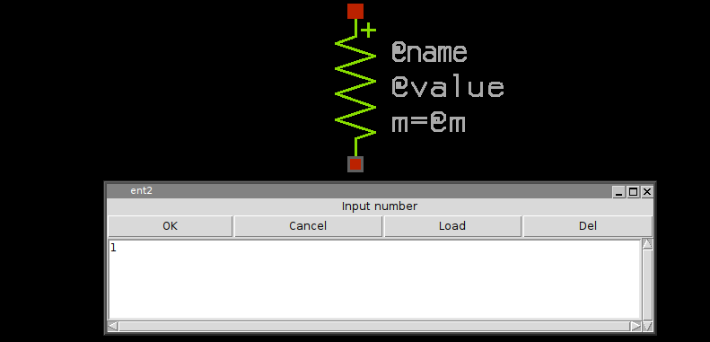

XSCHEM PROPERTIES
Properties are text strings that are associated to XSCHEM objects. All graphic primitives support properties.
- Wires
- Lines
- Polygons
- Rectangles
- Circles/Arcs
- Texts
- Symbol references
- Global attributes
Consider for example the res.sym symbol (you may open it with the File->Open menu item) if you click inside one of the red pins and press the 'edit property' bindkey 'q' a dialog box shows the property string associated with the selected pin:
The name=p dir=inout propag=1 pinnumber=1 property string tells that the selected pin name is 'p', this will be the symbol positive pin name in the produced netlist. The property string also defines a dir attribute with value inout. This tells XSCHEM that electrically this is an input/output pin. This is important when producing VHDL/verilog netlists. The propag=1 tells XSCHEM that when we select a wire attaced to this pin (which is located at index 0 in xschem) the highlight will propagate to the other pin (with index 1). To view the xschem index of a pin click and hold the mouse on it, the index will be shown as n= <number> in the bottom status line:
The pinnumber=1 attribute is used when exporting to pcb software (via the tEDAx netlist) and tells to which pin number on the resistor footprint this positive pin is bound. The second (bottom) pin property string is name=m dir=inout propag=0 pinnumber=2 and this defines the negative pin. The text primitives also have properties. For texts the property string may be used to specify font and the layer to use for displaying text.
GLOBAL PROPERTIES
If you click outside of any displayed graphics in XSCHEM the selection set will be cleared. Clicking the edit property 'q' key when nothing is selected will display the global property string of the schematic (.sch) or symbol window (.sym).
There is actually one different global property string defined for any available netlisting modes plus one global property string for symbol definition (file format 1.2), so if XSCHEM is set to produce SPICE netlists the SPICE global property string is displayed.
So, in addition to properties associated to graphical objects and symbols, we also have properties associated to schematic (.sch) and symbol files (.sym)

In the above 'Symbol' global property string, the format attribute defines the format of the SPICE netlist.
The SPICE netlist element line starts with the
symbol name (in this case a resistor so 'rxxxxx'), the list of pins, the
resistor value and a multiplicity factor (m).
@pinlist will resolve to the parent nets attached to the resistor
nodes, in the order they appear in the
symbol (in this example; first node = 'p', second node = 'm').
We will return on component instantiation later, but for now,
considering the following picture:
The @name will expand to R0, @pinlist for the R0
component will expand to POS NEG.
@value resolves to the resistor value assigned in component instantiation.
The template attribute defines default values if component
instantiation does not define values for them.
If you want to add a pin to an existing symbol you may copy one
of these. Select a pin, press the copy 'c'
bindkey and place a new copy of it somewhere.
After copying the pin you may change its properties, for example you
will change its property string to
something like: name=body dir=in (just as an example).
Note that pins in symbols are nothing more than rectangles
drawn with the pin layer; instead of copying an
existing one you may create it from scratch, select the pin
layer from the Layers menu, point the mouse where
you want to place the pin, press the 'r' bindkey and drag the mouse
to the desired pin size. There is no inherent limit or assumption
on pin sizes, you are allowed to create any rectangular/square sizes.
After placing the rectangle you must create a property string by selecting it
and pressing the 'q' bindkey. An empty string is shown in the
dialog. Add a valid string as explained and you are all done.
PIN ORDERING
An important aspect for symbols is the order of the pins when producing the netlist. There are some rules in the order for example in SPICE netlist syntax; for example a Bipolar transistor has 3 pins and should be in a specific order (collector, base, emitter). When done placing pins on a newly created symbol you can specify the order by selecting the one that must be the first in the netlist and hitting the '<shift>S' bindkey; set the number to zero; this will make the selected pin the first one. Next, select the second pin and again hit '<shift>S', set its number to 1 and so on. By doing so you have defined a specific pin ordering of the symbol.
PRIMITIVE OBJECT PROPERTIES
The following attribute may be set on lines, arcs, polygons, rectangles:
- dash=n, where n = integer. This specifies dashed mode drawing for the specified object.
The following attribute may be set on arcs and polygons:
- fill=true. This specifies to fill the object with the layer predefined fill style.
The following attribute may be set on wires and lines:
- bus=true. This specifies to draw a wider line. Mostly used to display wire buses.